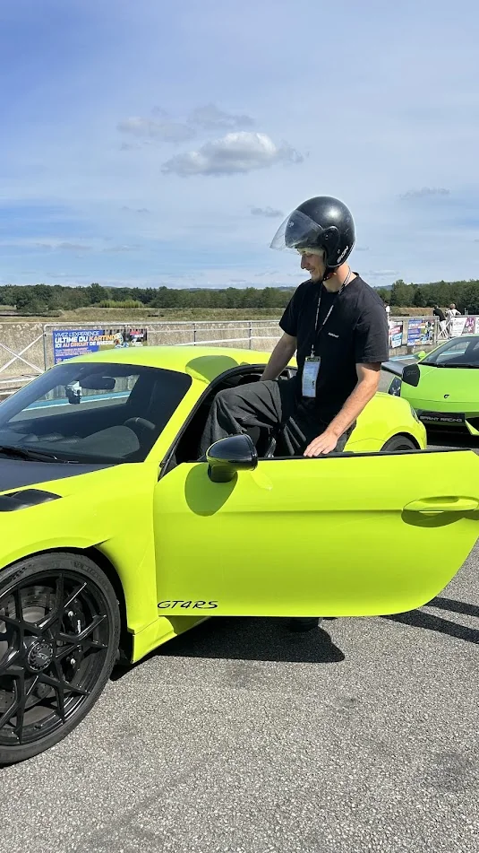
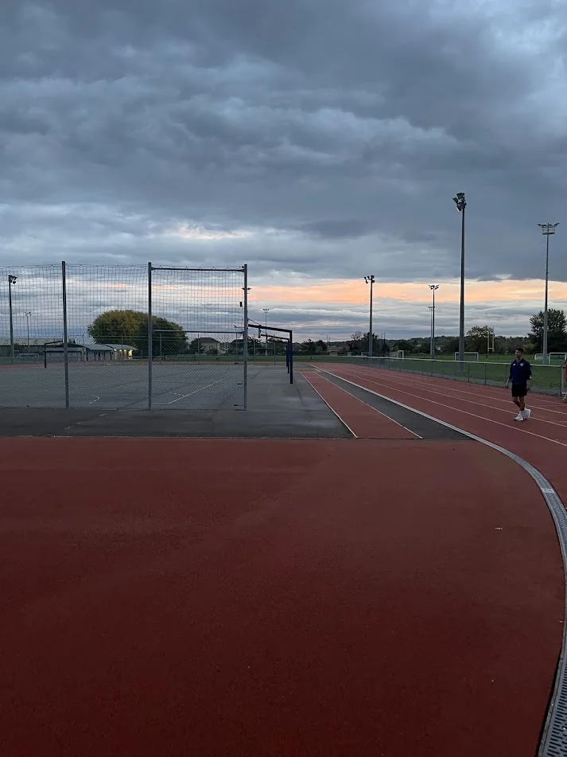

Partir d’un usage
NRclip et Liaison répondent d’abord à des besoins que je rencontre : préparer des vidéos et réunir des informations dispersées.
Faire connaissance
J’aime comprendre comment les choses fonctionnent. Et trouver comment les rendre plus simples à utiliser.
Mon parcours en réseaux et télécommunications m’a donné des bases techniques. Mes projets personnels me permettent de les prolonger : construire des interfaces, automatiser des tâches et créer du contenu.
Depuis septembre 2025, je suis pilote d’activité client et entreprise en alternance chez Orange. Depuis les bureaux, je coordonne les techniciens qui interviennent sur le terrain pour les mises en service, les changements d’offre et le SAV. Notre équipe suit principalement les clients entreprises ; la partie grand public est davantage confiée à nos partenaires.
Au quotidien, je prépare les plannings, participe à l’organisation des événements Orange et gère les aléas. Je vérifie le suivi des interventions et fais le lien entre les clients, nos techniciens, nos partenaires et mes collègues. En parallèle, je développe mon entreprise autour de la création de contenu.
Télécharger mon CVNRclip et Liaison répondent d’abord à des besoins que je rencontre : préparer des vidéos et réunir des informations dispersées.
Passer de l’idée à un outil permet de comprendre les contraintes, de faire des choix et d’améliorer ce qui existe.
Une interface utile ne repose pas seulement sur le code : elle doit aussi rendre les informations claires et les actions compréhensibles.
Ce qui m’anime aussi
Mes centres d’intérêt prennent une autre forme loin de l’écran, mais on y retrouve la curiosité et l’envie de progresser.

La conduite, la mécanique et le soin apporté aux détails. Des expériences en garage aux voitures sportives, l’automobile occupe une place particulière dans mon univers.
Un intérêt pour la précision autant que pour les sensations.

Musculation, course à pied et padel : des pratiques différentes, avec un point commun, la progression dans la durée.
Le sport apporte un équilibre au temps passé à concevoir et développer.
Découvrir d’autres paysages, marcher et prendre le temps de regarder. La montagne, La Réunion et la gastronomie font partie des découvertes partagées dans mon portfolio.
Une passion pour l’investissement
Au-delà de mes projets, je m’intéresse à l’investissement et au fonctionnement des entreprises : ce qu’elles construisent, leur modèle économique et les perspectives qui les accompagnent.
Cette curiosité se retrouve dans mes investissements via un PEA et Blast Club. Elle nourrit aussi Liaison, mon interface personnelle de suivi et d’organisation.
Le lien avec LiaisonUn volet de mon parcours d’investisseur, associé à mon intérêt pour la Bourse et les entreprises cotées.
Une ouverture vers les entreprises non cotées, leurs projets et les équipes qui les font avancer.
Le saxophone m’accompagne depuis l’enfance, avec un intérêt pour le jazz, le classique et la fusion. Une autre façon de travailler l’écoute, le rythme et l’expression.
Ce que je veux pour la suite
Je veux développer et diriger ma propre entreprise, avec la liberté de porter mes choix et de travailler sur des sujets qui me passionnent.
Mon fil conducteur : partir de besoins concrets et construire des outils ou des contenus utiles. Mon activité actuelle est une première étape pour apprendre à mener des projets dans la durée.
Découvrir mon parcours d’entrepreneur